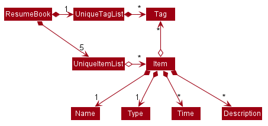

By: CS2103T F10-1 Since: Feb 2020 Licence: MIT
- 1. Introduction
- 2. Setting up
- 3. Design
- 4. Implementation
- 5. Documentation
- 6. Testing
- 7. Dev Ops
- Appendix A: Product Scope
- Appendix B: User Stories
- Appendix C: Use Cases
- Appendix D: Non Functional Requirements
- Appendix E: Glossary
- Appendix F: Product Survey
- Appendix G: Instructions for Manual Testing
1. Introduction
This developer guide documents the system design and implementation of ResuMe. We hope that it would be a useful reference for software developers who wish to contribute to the project, or to simply gain deeper insight into our development process and considerations.
2. Setting up
Refer to the guide here.
3. Design
3.1. Architecture
The Architecture Diagram given above explains the high-level design of the App. Given below is a quick overview of each component.
The .puml files used to create diagrams in this document can be found in the diagrams folder.
Refer to the Using PlantUML guide to learn how to create and edit diagrams.
|
-
At app launch: Initializes the components in the correct sequence, and connects them up with each other.
-
At shut down: Shuts down the components and invokes cleanup method where necessary.
Commons represents a collection of classes used by multiple other components.
The following class plays an important role at the architecture level:
-
LogsCenter: Used by many classes to write log messages to the App’s log file.
The rest of the App consists of four components.
Each of the four components
-
Defines its API in an
interfacewith the same name as the Component. -
Exposes its functionality using a
{Component Name}Managerclass.
For example, the Logic component (see the class diagram given below) defines it’s API in the Logic.java interface and exposes its functionality using the LogicManager.java class.
How the architecture components interact with each other
The Sequence Diagram below shows how the components interact with each other for the scenario where the user issues the command delete 1 i/ ski.
delete 1 i/ ski commandHow the architecture components interact at start up
The Sequence Diagram below shows how the components interact with each other at start up.
The sections below give more details of each component.
3.2. UI component

API : Ui.java
The UI consists of a MainWindow that is made up of parts e.g.CommandBox, ResultDisplay, ItemDisplay, PersonListPanel, StatusBarFooter etc. All these, including the MainWindow, inherit from the abstract UiPart class.
The UI component uses JavaFx UI framework. The layout of these UI parts are defined in matching .fxml files that are in the src/main/resources/view folder. For example, the layout of the MainWindow is specified in MainWindow.fxml
The UI component,
-
Executes user commands using the
Logiccomponent. -
Listens for changes to
Modeldata so that the UI can be updated with the modified data. -
Responds to events raised by various commands and the UI can be updated accordingly.
3.3. Logic component
API :
Logic.java
-
Logicuses theResumeBookParserclass to parse the user command. -
This results in a
Commandobject which is executed by theLogicManager. -
The command execution can affect the
Model(e.g. adding a new resume). -
The result of the command execution is encapsulated as a
CommandResultobject which is passed back to theUi. -
In addition, the
CommandResultobject can also instruct theUito perform certain actions, such as displaying help to the user.
Given below is the Sequence Diagram for interactions within the Logic component for the execute("delete 1 i/ res") API call.
delete 1 Command
The lifeline for DeleteCommandParser should end at the destroy marker (X) but due to a limitation of PlantUML, the lifeline reaches the end of diagram.
|
3.4. Model component
API : Model.java
The Model,
-
stores a
UserPrefobject that represents the user’s preferences. -
stores the Resume Book data.
-
exposes an unmodifiable
ObservableList<Item>that can be 'observed' e.g. the UI can be bound to this list so that the UI automatically updates when the data in the list change. -
does not depend on any of the other three components.
As a more OOP model, we can store a Tag list in ResumeBook, which Item can reference. This would allow ResumeBook to only require one Tag object per unique Tag, instead of each Item needing their own Tag object. An example of how such a model may look like is given below. |
3.5. Storage component
API : Storage.java
The Storage component,
-
can save
UserPrefobjects in json format and read it back. -
can save the Resume Book data in json format and read it back.
3.6. Common classes
Classes used by multiple components are in the seedu.resumebook.commons package.
4. Implementation
This section describes some noteworthy details on how certain features are implemented.
4.1. Resume Edit feature
4.1.1. Proposed Implementation
The Resume Edit feature or redit allows users to edit which Item belongs to the Resume (for example, adding a Skill item or removing an Internship item).
It is not to be confused with the edit command, which simply modifies the fields of an Item.
The redit command is facilitated by ResumeEditCommand, which extends Command.
Therefore, like any other Command classes, it will have an execute method.
Adding into the resume
The following screenshot illustrates what happens when we use redit to add item into the resume. The numbers in the command represent the index of the item in the list. After the end of the command, the number of item in the resume would have increased.
For modifications and removal of item from the resume, all we have to do is to run the same command again, specifying which item we want to retain in the resume.
Removing all from the resume
The following sreenshot illustrates what happens if you want to remove all the items in the resume, starting from a an already-filled resume:
Removing some from the resume
And the following screenshot illustrates what happens if you want to remove some items:
Changing content using tags
On top of these methods to change the content of the resume, redit can also make changes to the resume by making use of tags.
Regardless of what the original content is, after running the command, the resume will then only have items with the desired tags.
An example is shown in the following screenshot:
4.1.2. Design Considerations
Aspect: Whether ResumeEditCommand should extend EditCommand
-
Alternative 1 (current choice):
ResumeEditCommanddoes not extendEditCommand, but extendsCommand. This design is chosen becausereditis sufficiently different fromedit. Aneditcommand is intended to change the details of the resume such as its name, whilereditis supposed to change the content that the resume holds.-
Pros: Reduce the size of responsibility for
EditResumeCommand. Each command class now does one and only one thing so Single Responsibility Pricniple is observed. -
Cons: Unable to exploit polymorphism if there is similarity with the
EditCommand. From user’s point-of-view, it may be confusing to have bothreditandedit.
-
-
Alternative 2:
ResumeEditCommandextendsEditCommand-
Pros: Some methods in
EditCommandmay be able to inherited byResumeEditCommand, reducing code duplication. -
Cons: If the functionality of
ResumeEditCommandis limited, it could have been combined withEditCommandentirely.
-

4.2. Implementation of Command classes
4.2.1. Current Implementation
Currently, there are several object Type which are subclasses of Item, namely Resume, Internship, Skill,
and Project.
Commands that are dependent on item Type, namely EditCommand, AddCommand, DeleteCommand, FindCommand,
ListCommand, and ViewCommand are implemented as abstract classes that inherits from Command and would have a
concrete classes that corresponds to each item Type. For example, AddCommand is an abstract class that
AddInternshipCommand and AddSkillCommand inherits from.
Commands that are not dependent on item Type (eg. EditUserCommand, HelpCommand) are implemented as concrete
classes that inherits from Command.
XYZCommand is independent of Type whereas ABCCommand is dependent on Type.4.2.2. Design Considerations
Aspect: Whether to separate the ABCCommand that is dependent on type into many ABCItemCommand
-
Alternative 1 (current choice):
ABCCommandis separated into manyABCItemCommand.-
Pros: More OOP. Flexible behaviour of
ABCItemCommandand can be easily changed as required. No casing required. EachABCItemCommandhas it’s own and distinct functionality. -
Cons: Many classes have to be maintained.
-
-
Alternative 2: Do not separate
ABCCommand.-
Pros: Only one command is required, regardless of number of items. Low overhead.
-
Cons: Long
executemethod due to the need for handling the different item types. ItemTypewould also need to be stored. Undesirable variable functionality ofexecutecommand depending on theTypefield despite it being from the same class. ie.AddItemcan addInternshipto theInternshiplist, or addSkilltoSkilllist.
-
4.3. Me Feature
This feature allows a user to make changes and updates his/her user profile which is reflected by the user profile panel. At the same time, it also allows user to personalise his/her experience using the app with certain sub-features. They are elaborated below:
-
Edit user profile image
-
Edit user main data
-
Input, store and generate motivational quotes
-
Change background and font color
-
Set reminders or take notes
4.3.1. Edit User Profile Image
This allows the specific user to input and update his/her user profile picture.
4.3.2. Edit User Main Data
This allows one specific user to modify and update user information that includes name, phone, email1, github,
university, major, from, to, cap.
Below is an example usage scenario and how the edit user data command works.
-
User launches the application for the first time. The User Profile and Data will be initialized with the initial json data stored.
-
User executes
me n/NAME p/PHONE e/EMAIL g/GITHUB u/UNIVERSITY m/MAJOR f/FROM t/TO c/CAPso as to update the Person object currently stored in Model as well as Storage.me n/Nham Hung p/91608840 e/nhamhung.gttn@gmail.com g/nhamhung u/NUS m/CS f/10-2020 t/11-2020 c/5.0
-
The Ui User Data Table will be updated accordingly.
Command sequence:
-
User type
mecommand in the command box. -
Command is executed by Logic Manager.
-
Command is parsed by
ResumeBookParserwhich identifies what type of command it is. AnEditUserParseris returned accordingly. -
EditUserParserextracts out different components of the command into anEditUserDescriptorobject and returns anEditUserCommandwith theEditUserDescriptorobject which contains information on which attributes of user data is updated or kept unchanged. -
EditUserCommandthen callsexecute()which first gets the existing user in Model asuserToEdit. Then it creates a neweditedUserbased onEditUserDescriptor. It will then update the currentuserToEditin Model witheditedUser. Afterwards, aCommandResultis returned to Logic with data and feedback to be displayed to the user. -
Feedback acknowledge is displayed by
ResultDisplay. User profile changes are displayed by JavaFxTableView.
The following sequence diagram shows how the me feature allows user to edit the user profile:
Design Considerations
Aspect: Whether EditUserCommand should extend EditCommand
-
Alternative 1 (current choice):
EditUserCommanddoes not extendEditCommand, but extendsCommandThis design is chosen because whileEditCommandtakes into account the item index as all items are stored in a list in Model,EditUserCommandonly concerns with a singlePersonwho is the sole user.-
Pros: Reduces unnecessary overhead for
EditUserCommand. -
Cons: Unable to exploit polymorphism if there is similarity with the
EditCommand.
-
-
Alternative 2:
EditUserCommandextendsEditCommand-
Pros: Better utilise polymorphism and perhaps can be more intuitive as it is also a command to edit.
-
Cons: Does not treat it as an entirely separate command with a distinct keyword
mewhich is more intuitive for the user.
-
Aspect: Whether to have both AddUserCommand and EditUserCommand
-
Alternative 1 (current choice): A default user data is initialized and displayed at first start-up. User can update it afterwards. This design is chosen because
EditUserCommandonly concerns with a singlePersonobject in the Model as the sole user. Hence there is no need forAddUserCommandasEditUserCommandwhen executed always creates a newPersonobject to replace the existing one and update the Model and Ui accordingly.-
Pros: Reduces unnecessary code duplication.
-
Cons: User may expect to have
addcommand intuitively.
-
-
Alternative 2: Have both
AddUserCommandandEditUserCommand-
Pros: User can intuitively treat
addas adding in a newuserandeditas just modifying an existinguser. -
Cons: There will be code duplication and the one single user logic is not fully utilised to reduce code.
-
4.3.3. Store and Display Motivational Quotes
This allows the user to input and store motivational quotes. They are then able to display them at the user profile pane.
4.3.4. Set Personal Reminders and Take Notes
This allows the user to set reminders as well as taking notes for him/herself to further customize his/her interaction with the app.
4.3.5. Change Background and Font Color
This allows the user to change the background and font color using rgb or hex color codes.
4.4. Export Resume feature
The Export Resume feature supports two main actions: previewing the content of a Resume item, and
then exporting it as a .pdf file.
4.4.1. rpreview: preview a Resume
Implementation
rpreview is supported by the new Command, ResumePreviewCommand and the additional method Resume#getPreview()
which return the content of the Resume in textual format.
Given below is an example usage scenario:
Step 1. The user launches the ResuMe application. After loading data from storage to the application memory, the list of resumes in the ResumeBook could either contain some resumes, or is empty.
Step 2. The user executes rpreview INDEX. If the specified resume index is out of bound, ResuMe throws an error message.
Step 3. The application retrieves the correct Resume item and call getPreview() on that resume.
The following activity diagram summarises what happens when a user executes rpreview command:
Design Considerations
Aspect: Where rpreview is displayed
-
Alternative 1 (current choice): Display in the same panel as
view-
Pros: No significant change to UI component.
-
Cons: Multiple commands needed if user finds out about a typo in an item, wants to view the item in details, fix the typo and then check the preview again to ensure there is no more error.
-
-
Alternative 2: Create a separate UI panel to display the resume preview. Additionally, this panel could be implemented such that it automatically updates when the content of the
Resumeitem is edited.-
Pros: User can see the resume preview and the item detail panels at the same time, hence saving time switching between views.
-
Cons: Too many panels could be confusing for the user to navigate. The space is also often wasted since user does not need to use
rpreviewregularly.
-
4.4.2. rgen: generate a .pdf file from a Resume
Implementation
This feature utilises the external iText library. When using rgen, the user could specify the desired name of
the generated file, which will be saved in the root directory of the project.
rgen implements the following operations:
-
create(String)andcreate()- initialises the .pdf file, either with the inputStringname specified by the user, or with the same name as theResumename if the file name is not specified. -
addSection(String)- starts a new section with theStringname (e.g. "Internship"). -
populateSection(UniqueItemList)andinsertItem(Item)- populates the section with items in the same order as they are in theUniqueItemList. When anItemis inserted, it is correctly formatted depending on the item type.
Given below is an example usage scenario:
Step 1. The user launches ResuMe. After loading data from storage to the application memory, the list of resumes in the ResumeBook could either contain some resumes, or is empty.
Step 2. The user executes rgen INDEX n/ FILE_NAME. If the specified resume index is out of bound,
ResuMe throws an error message.
Step 3. The application retrieves the correct Resume item, create a new .pdf file and populates it with the corresponding
items inside the Resume.
The following activity diagram summarises what happens when a user executes rgen command:
Detailed steps are shown in the sequence diagram below:
4.4.3. Design Considerations
Aspect: How rgen executes
-
Alternative 1 (current choice): Generate .pdf file by iteratively reading and inserting details of
Itemfrom inside theResumeitself.-
Pros: Better control of the output layout, as the position and formatting of each section could be set individually. Additionaly,
rgenis dynamic, in the sense that even without callingrpreviewevery time, the generated file will be consistent with any item update. -
Cons: Coupled with
rpreview, the content of aResumemust be read twice every time the user wishes to export.
-
-
Alternative 2: Generate .pdf file directly from the previewed text output by
rpreview-
Pros: Faster
rgen -
Cons: Limited formatting options (font and font size at most) since the whole document is input as one long string.
rgenimplemented this way is also static, and might not reflect the most updated content if there are item changes afterrpreviewis called.
-
end::export[]
4.5. [Proposed] Undo/Redo feature
4.5.1. Implementation
The undo/redo mechanism is facilitated by VersionedResumeBook.
It extends ResumeBook with an undo/redo history, stored internally as an ResumeBookStateList and currentStatePointer.
Additionally, it implements the following operations:
-
VersionedResumeBook#commit()— Saves the current resume book state in its history. -
VersionedResumeBook#undo()— Restores the previous resume book state from its history. -
VersionedResumeBook#redo()— Restores a previously undone resume book state from its history.
These operations are exposed in the Model interface as Model#commitResumeBook(), Model#undoResumeBook() and Model#redoResumeBook() respectively.
Given below is an example usage scenario and how the undo/redo mechanism behaves at each step.
Step 1. The user launches the application for the first time. The VersionedResumeBook will be initialized with the initial resume book state, and the currentStatePointer pointing to that single resume book state.
Step 2. The user executes delete 5 i/ res command to delete the 5th resume in the resume book. The delete command calls Model#commitResumeBook(), causing the modified state of the resume book after the delete 5 i/ res command executes to be saved in the resumeBookStateList, and the currentStatePointer is shifted to the newly inserted resume book state.
Step 3. The user executes add i/ res n/ Summer Resume … to add a new resume. The add command also calls Model#commitResumeBook(), causing another modified resume book state to be saved into the resumeBookStateList.
If a command fails its execution, it will not call Model#commitResumeBook(), so the resume book state will not be saved into the resumeBookStateList.
|
Step 4. The user now decides that adding the resume was a mistake, and decides to undo that action by executing the undo command. The undo command will call Model#undoResumeBook(), which will shift the currentStatePointer once to the left, pointing it to the previous resume book state, and restores the resume book to that state.
If the currentStatePointer is at index 0, pointing to the initial resume book state, then there are no previous resume book states to restore. The undo command uses Model#canUndoResumeBook() to check if this is the case. If so, it will return an error to the user rather than attempting to perform the undo.
|
The following sequence diagram shows how the undo operation works:
The lifeline for UndoCommand should end at the destroy marker (X) but due to a limitation of PlantUML, the lifeline reaches the end of diagram.
|
The redo command does the opposite — it calls Model#redoResumeBook(), which shifts the currentStatePointer once to the right, pointing to the previously undone state, and restores the resume book to that state.
If the currentStatePointer is at index resumeBookStateList.size() - 1, pointing to the latest resume book state, then there are no undone resume book states to restore. The redo command uses Model#canRedoResumeBook() to check if this is the case. If so, it will return an error to the user rather than attempting to perform the redo.
|
Step 5. The user then decides to execute the command list i/ res. Commands that do not modify the resume book, such as list, will usually not call Model#commitResumeBook(), Model#undoResumeBook() or Model#redoResumeBook(). Thus, the resumeBookStateList remains unchanged.
Step 6. The user executes clear, which calls Model#commitResumeBook(). Since the currentStatePointer is not pointing at the end of the resumeBookStateList, all resume book states after the currentStatePointer will be purged. We designed it this way because it no longer makes sense to redo the add i/ res … command. This is the behavior that most modern desktop applications follow.
The following activity diagram summarizes what happens when a user executes a new command:
4.5.2. Design Considerations
Aspect: How undo & redo executes
-
Alternative 1 (current choice): Saves the entire resume book.
-
Pros: Easy to implement. Easy to understand.
-
Cons: May have performance issues in terms of memory usage.
-
-
Alternative 2: Individual command knows how to undo/redo by itself.
-
Pros: Will use less memory (e.g. for
delete, just save the item being deleted). -
Cons: We must ensure that the implementation of each individual command is correct. It is further complicated by the fact that there is an
add,delete, andeditcommand for each of item type. Also, Separation of Concerns Principle is violated as in essence, theundo()method of a command is doing more than what the command is responsible for, e.g. undoing adeletecommand is essentially performing anaddcommand.
-
Aspect: Data structure to support the undo/redo commands
-
Alternative 1 (current choice): Use a list to store the history of resume book states.
-
Pros: Very straightforward. Developers, even the novice ones, can easily understand and pick up if they wish to improve upon our application.
-
Cons: Logic is duplicated twice. For example, when a new command is executed, we must remember to update both
HistoryManagerandVersionedResumeBook.
-
-
Alternative 2: Use
HistoryManagerfor undo/redo.HistoryManagerwill contain two stacks:UndoStackandRedoStack. We push a command into the former stack when it is executed; when anundois performed, we pop the top of theUndoStackand store the command in theRedoStack.-
Pros: We do not need to maintain a separate list, and just reuse what is already in the codebase. We also just need to store the history of commands as opposed to the entire resume book.
-
Cons: Handling of the stacks can be confusing, especially since there are commands that make no change to the model and thus are not (and should not be) stored.
editanddeleterequire the old-versioned item to be stored as well so that it can be restored whileadddoes not, thereby affecting consistency.
-
4.6. [Proposed] Data Encryption
{Explain here how the data encryption feature will be implemented}
4.7. Logging
We are using java.util.logging package for logging. The LogsCenter class is used to manage the logging levels and logging destinations.
-
The logging level can be controlled using the
logLevelsetting in the configuration file (See Section 4.8, “Configuration”) -
The
Loggerfor a class can be obtained usingLogsCenter.getLogger(Class)which will log messages according to the specified logging level -
Currently log messages are output through:
Consoleand to a.logfile.
Logging Levels
-
SEVERE: Critical problem detected which may possibly cause the termination of the application -
WARNING: Can continue, but with caution -
INFO: Information showing the noteworthy actions by the App -
FINE: Details that is not usually noteworthy but may be useful in debugging e.g. print the actual list instead of just its size
4.8. Configuration
Certain properties of the application can be controlled (e.g user prefs file location, logging level) through the configuration file (default: config.json).
5. Documentation
Refer to the guide here.
6. Testing
Refer to the guide here.
7. Dev Ops
Refer to the guide here.
Appendix A: Product Scope
Target user profile:
-
has a need to manage a significant number of contacts
-
prefer desktop apps over other types
-
can type fast
-
prefers typing over mouse input
-
is reasonably comfortable using CLI apps
Value proposition: manage contacts faster than a typical mouse/GUI driven app
Appendix B: User Stories
Priorities: High (must have) - * * *, Medium (nice to have) - * *, Low (unlikely to have) - *
| Priority | As a … | I want to … | So that I can… |
|---|---|---|---|
|
user |
manage and customise different resumes |
use different resumes for different companies |
|
user |
create a resume file |
print it |
|
user |
add to and remove 'items' from a certain resume |
|
|
user |
add, edit, and remove 'items' |
|
|
user |
preview my resume |
check for mistakes in a resume before generating it |
|
user |
search for items containing certain keywords |
find items that are relevant to my current need |
|
user |
see all the 'items' I’ve added |
|
|
user |
see all my resumes |
manage them in a centralised location |
|
user |
categorise the 'items' I’ve added |
to ensure my resume will have 'items' of different types |
|
new user |
view more information about various commands |
learn to use new commands |
|
careless user |
undo my previous command |
skip the step of manually editing or deleting them. |
|
busy user |
auto-format my resumes |
'items' refers to a resume field of type personal details, project, education, skills, internship, and achievement.
{More to be added}
Appendix C: Use Cases
(For all use cases below, the System is the ResumeBook and the Actor is the user, unless specified otherwise)
Use case: Edit an item
MSS
-
User requests to list all items or only items of a specific
TYPE -
ResuMe shows a list of corresponding items
-
User checks for the
IDof a specific item in the list to edit -
User requests to edit a specific item in the list
-
ResuMe updates that item and displays edited item to user
Use case ends.
Extensions
-
3a. The
IDgiven by user does not match any item of type-
3a1. ResuMe shows an error message
Use case: Find item(s)
-
MSS
-
User enters
find KEYWORDwithout specifying aTYPE -
ResuMe displays all items whose names contain the
KEYWORD -
If user enters
find -TYPE KEYWORD -
ResuMe displays only items of the
TYPEwhose names contain theKEYWORDUse case ends.
Extensions
-
1a. None of the items contain the
KEYWORD.-
1a1. ResuMe shows an error message.
Use case: Delete an item
-
MSS
-
User requests to list all items or only items of a specific
TYPE -
ResuMe shows a list of corresponding items
-
User checks for the
IDof a specific item in the list to delete -
User requests to edit a specific item in the list
-
ResuMe deletes that item from the list and displays deleted item to user
Use case ends.
Extensions
-
2a. The list is empty.
-
Use case ends.
-
-
3a. The given
IDis invalid.-
3a1. ResuMe shows an error message.
-
Use case resumes at step 2.
-
{More to be added}
Appendix D: Non Functional Requirements
-
Should work on any mainstream OS as long as it has Java
11or above installed. -
Should work on both 32-bit and 64-bit environments.
-
Should be able to support up to 1000 users without a noticeable sluggishness in performance for typical usage.
-
Should be able to support at least 5 resumes per user, 20 items per resume, and 100 resume items in total.
-
Data should be stored locally such that users can access them (either through the application or directly by access the data file) without any network connection.
-
Should response within two seconds for a normal item query, and five seconds for a pdf generation request.
-
A user with some familiarity with Command Line Interface (CLI) should be able to accomplish most of the tasks faster using commands than using the mouse to navigate the Graphic User Interface (GUI).
{More to be added}
Appendix E: Glossary
Appendix F: Product Survey
Product Name
Author: …
Pros:
-
…
-
…
Cons:
-
…
-
…
Appendix G: Instructions for Manual Testing
Given below are instructions to test the app manually.
| These instructions only provide a starting point for testers to work on; testers are expected to do more exploratory testing. |
G.1. Launch and Shutdown
-
Initial launch
-
Download the jar file and copy into an empty folder
-
Double-click the jar file
Expected: Shows the GUI with a set of sample contacts. The window size may not be optimum.
-
-
Saving window preferences
-
Resize the window to an optimum size. Move the window to a different location. Close the window.
-
Re-launch the app by double-clicking the jar file.
Expected: The most recent window size and location is retained.
-
{ more test cases … }
G.2. Deleting a person
-
Deleting a person while all persons are listed
-
Prerequisites: List all persons using the
listcommand. Multiple persons in the list. -
Test case:
delete 1
Expected: First contact is deleted from the list. Details of the deleted contact shown in the status message. Timestamp in the status bar is updated. -
Test case:
delete 0
Expected: No person is deleted. Error details shown in the status message. Status bar remains the same. -
Other incorrect delete commands to try:
delete,delete x(where x is larger than the list size) {give more}
Expected: Similar to previous.
-
{ more test cases … }
G.3. Saving data
-
Dealing with missing/corrupted data files
-
{explain how to simulate a missing/corrupted file and the expected behavior}
-
{ more test cases … }